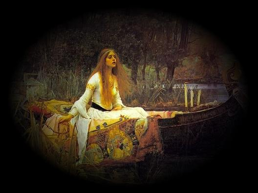

Listen to 'Star' in English

|
Transl. Christian Souchon 01.01.2005-2026 (c) (r) All rights reserved |
Commentaires générés par IA en 2026
Comments generated by AI in 2026
|
Le motif de l’étoile — Brève analyse Dans Étoile, l’astre est un double emblème : à la fois cible et secret. Suspendu « au mitan de mon fleuve », il marque le point de rencontre entre la visée et l’énigme. L’étoile est ce que le poète recherche, mais aussi ce qu’il porte en lui-même. Elle est le signe extérieur d’un fardeau intérieur. La position de l’étoile — « au mitan de mon fleuve » — est capitale. Le terme dialectal « mitan » (milieu) évoque un monde oral plus ancien, et plus précisément la chanson traditionnelle « Aux marches du Palais », dont un vers dit : « Dans le mitan du lit la rivière est profonde » … Dans cette chanson, le « mitan » est un lieu de métamorphose où le lit devient rivière et le paysage, seuil. L’étoile de Galiana hérite de cette géographie symbolique : elle brille au point de passage où l’identité bascule, où le familier accède au mythe. L’étoile marque ainsi un centre liminaire, un point où le fleuve intérieur du poète rejoint une mémoire collective ancestrale. L’étoile est également liée à la voix disparue dont le chant hante le poète. Elle devient le point fixe où se croisent les vivants et les disparus. L’étoile est la trace d’un chanteur évanoui, une lumière qui persiste alors que la voix s’est tue. Elle est l’emblème d’une musique posthume, cette présence obsédante qui guide l’ascension du poète. Enfin, l’étoile entretient une tension avec la chair, qui « barrerait sa porte » à l’ascension du poète. La chair représente la limite, la pesanteur, l’enfermement. L’étoile incarne l’opposé : l’ouverture, l’élévation, la nuit contenue en soi. Lorsque le poète déclare : « Si je n’étais un ciel et ne portais la nuit », il s’identifie au domaine de l’étoile. Il devient le réceptacle de la nuit, ce ciel intérieur qui recèle le secret de l’étoile. Dans la grammaire symbolique de Galiana, l’étoile est donc : • la cible de l’ascension du poète, • le secret qu’il porte, • l’écho d’une voix disparue, • et la lumière enclose dans la nuit du soi. Elle est le point de convergence entre mémoire, identité et révélation nocturne. |
The Star Motif — Brief Commentary In Étoile, the star is a double emblem: both target and secret. Suspended “in the midst of my stream,” it marks the point where aim and enigma coincide. The star is what the poet seeks, yet also what he carries within himself. It is the external sign of an inner burden. The star’s position —au mitan de mon fleuve— is crucial. The dialect word mitan (“middle”) evokes an older, oral world, and specifically the traditional song ‘Aux marches du Palais’ with the verse: “Dans le mitan du lit la rivière est profonde”… In that song, the “middle” is a place of transformation where bed becomes river and landscape becomes threshold. Galiana’s star inherits this symbolic geography: it shines at the crossing where identity shifts, where the familiar becomes mythic. The star is thus the marker of a liminal center, a point where the poet’s inner river meets an ancient, communal memory. The star is also linked to the dead voice whose song haunts the poet. It becomes the fixed point where the living and the lost intersect. The star is the remnant of a vanished singer, a light that persists after the voice has fallen silent. It is the emblem of posthumous music, the haunting that guides the poet’s flight. Finally, the star stands in tension with flesh, which “would bar its door” to the poet’s ascent. Flesh represents limit, gravity, enclosure. The star represents the opposite: openness, elevation, the night held within the self. When the poet declares, “If I were not a sky and did not hold the night,” he identifies himself with the star’s domain. He becomes the vessel of night, the inner sky in which the star’s secret is contained. In Galiana’s symbolic grammar, the star is therefore: • the target of the poet’s ascent, • the secret he bears, • the echo of a dead voice, • and the light enclosed within the night of the self. It is the point where memory, identity, and nocturnal revelation converge. |
Listen to 'Star' in English